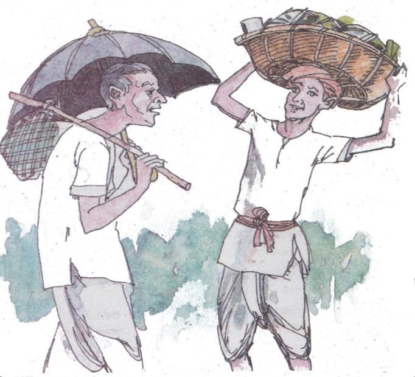
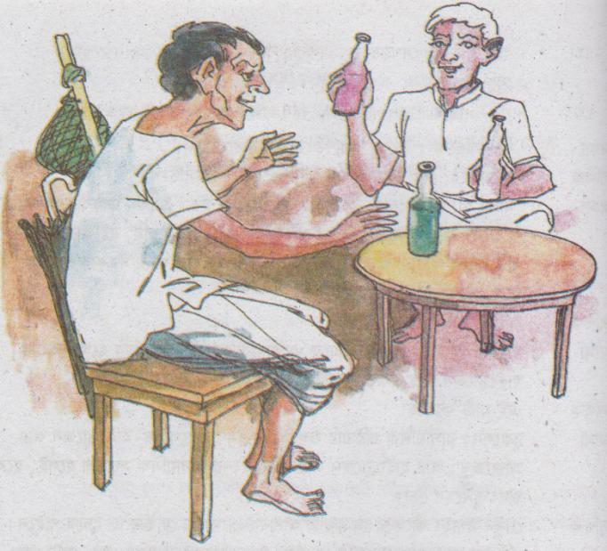

অবাক জলপান
সুকুমার রায়
পাত্রগণ: পথিক। ঝুড়িওয়ালা। বৃদ্ধ। ছোকরা। খোকা। মামা।
প্রথম দৃশ্য
রাজপথ
(ছাতা মাথায় এক পথিকের প্রবেশ। পিঠে লাঠির আগায় লোটা-বাঁধা পুঁটলি। উসকো-খুসকো চুল। ভ্রান্ত চোহারা)
পথিক : নাঃ একটু জল না পেলে আর চলছে না। সেই সকাল থেকে হেঁটে আসছি, এখনও প্রায় এক ঘন্টার পথ বাকি। তেষ্টায় মগজের ঘিলু পর্যন্ত শুকিয়ে উঠল। কিন্তু জল চাই কার কাছে?

গেরস্তর বাড়ি, দুপর রোদে দরজা এঁটে সব ঘুম দিচ্ছে, ডাকলে সাড়া দেয় না। বেশি চ্যাঁচাতে গেলে হয়তো লাঠি নিয়ে তেড়ে আসবে। পথেও লোকজন দেখছি নে। ওই একজন আসছে! ওকেই জিজ্ঞেস করা যাক।
[ঝুড়ি মাথায় এক ব্যক্তির প্রবেশ ]
পথিক : মশাই, একটু জল পাই কোথায় বলতে পারেন?
ঝুড়িওয়ালা : জলপাই? জলপাই এখন কোথায় পাবেন? এ তো জলপাইয়ের সময় নয়। কাঁচা আম চান তো দিতে পারি –
পথিক : না, না আমি তা বলিনি -
ঝুড়িওয়ালা : না, কাঁচা আম আপনি বলেননি, কিন্তু জলপাই চাচ্ছিলেন কিনা, তা তো আর এখন পাওয়া যাবে না, তাই বলছিলুম –
পথিক : না হে, আমি জলপাই চাচ্ছিনে
ঝুড়িওয়ালা : চাচ্ছেন না তো, ‘কোথায় পাব’ ‘কোথায় পাব’ কচ্ছেন কেন? খামাখা এরকম করবার মানে কী?
পথিক : আপনি ভুল বুঝছেন- আমি জল চাচ্চিলাম-
ঝুড়িওয়ালা : জল চাচ্ছেন তো ‘জল’ বললেই হয়- ‘জলপাই’ বলবার দরকার কী? জল আর জলপাই কি এক হলো? আলু আর আলুবোখরা কি সমান? মাছও যা আর মাছরাঙ্গাও তাই? বরকে কি আপনি বরবন্দাজ বলেন? চাল কিনতে গিয়ে কি চালতার খোঁজ করেন?
পথিক : ঘাট হয়েছে মশাই। আপনার সঙ্গে কথা বলাই আমার অন্যায় হয়েছে।
ঝুড়িওয়ালা : অন্যায় তো হয়েছেই। দেখছেন ঝুড়ি নিয়ে যাচ্ছি- তবে জল চাচ্ছেন কেন? ঝুড়িতে করে কি জল নেয়? লোকের সঙ্গে কথা কইতে গেলে একটু বিবেচনা করে বলতে হয়।
[ঝুড়িওয়ালার প্রস্থান]
[পাশের বাড়ির জানালা খুলিয়া আর এক বৃদ্ধের হাসিমুখ বাহিরকরণ]
বৃদ্ধ : কী হে? এত তর্কাতর্কি কিসের
পথিক : আজ্ঞে না, তর্ক নয়। আমি জল চাচ্ছিলুম, তা উনি সে কথা কানেই নেন না-কেবলই সাত-পাঁচ গপপো করতে লেগেছেন। তাই বলতে গেলুম তো রেগেমেগে অস্থির।
বৃদ্ধ : আরে দূর দূর। তুমিও যেমন! জিজ্ঞেস করবার আর লোক পাওনি? ও হতভাগা জানেই বা কী আর বলবেই বা কী? ওর যে দাদা আছে, খালিসপুরে চাকরি করে।
৬৬সেটা তো একটা আস্ত গাধা। ও মুখ্যুটা কী বলবে তোমায়?
পথিক : কী জানি মশাই-জলের কথা বলতেই কুয়োর জল, নদীর জল, পুকুরের জল, কলের জল, মামাবাড়ির জল বলে পাঁচরকম ফর্দ শুনিয়ে দিলে-
বৃদ্ধ : হুঁঃ- ভাবলে খুব বাহাদুরি করেছি। তোমায় বোকামতো দেখে খুব চাল চেলে নিয়েছে। ভারি তো ফর্দ করেছেন, আমি লিখে দিতে পারি, ও যদি পাঁচটা জল বলে থাকে তো আমি এক্ষুণি পঁচিশটা বলে দেব-
পথিক : না মশাই, গুনিনি-আমার খেয়েদেয়ে কাজ নেই –
বৃদ্ধ : তোমার কাজ না থাকলেও আমার কাজ থাকতে পারে তো? যাও, যাও, মেলা বকিয়ো না-একেবারে অপদার্থের একশেষ।
[বৃদ্ধের সশব্দে জানালা বন্ধকরণ]
[নেপথ্যে বাড়ির ভিতরে বালকের পাঠ]
[পৃথিবীর তিন ভাগ জল এক ভাগ স্থল।
সমুদ্রের জল লবণাক্ত, অতি বিস্বাদ।]
পথিক : ওহে খোকা! এদিকে শুনে যাও তো?
[রুক্ষমূর্তি, মাথায় টাক, লম্বা দাড়ি খোকার মামা বাড়ি হইতে বাহির হইলেন]
মামা : কে হে? পড়ার সময় ডাকাডাকি করতে এয়েছ? – (পথিককে দেখিয়া)ও! আমি মনে করেছিলুম পাড়ার কোনও ছোকরা বুঝি! আপনার কী দরকার?
পথিক : আজ্ঞে, জলতেষ্টায় বড় কষ্ট পাচ্ছি-তা একটু জলের খবর কেউ বলতে পারলে না।
[মামার তাড়াতাড়ি ঘরের দরজা খুলিয়া দেওয়া]
মাম : কেউ বলতে পারলে না? আসুন, আসুন, কী খবর চান, কী জানতে চান, বলুন দেখি? সব আমায় জিজ্ঞেস করুন, আমি বলে দিচ্ছি।
[পথিককে মামার ঘরে টানিয়া নেওয়া]
৬৭দ্বিতীয় দৃশ্য
ঘরের ভিতর
[ঘর নানা রকম যন্ত্র, নকশা, রাশি-রাশি বই ইত্যাদিতে সজ্জিত]
মামা : কী বলছিলেন? জলের কথা জিজ্ঞেস করছিলেন না?
পথিক : আজ্ঞে হ্যাঁ, সেই সকাল থেকে হাঁটতে হাঁটতে আসছি!
মামা : আ হা হা! কী উৎসাহ, কী আগ্রহ! শুনেও সুখ হয়। এরকম জানবার আকাঙ্ক্ষা ক-জনের আছে, বলুন তো? বসুন! বসুন! (কতকগুলি ছবি, বই আর এক টুকরো খড়ি বাহির করিয়া) জলের কথা জানতে গেলে প্রথমে জানা দরকার, জল কাকে বলে, জলের কী গুণ –
পথিক : আজ্ঞে, একটু খাবার জল যদি –
মামা : আসছে – ব্যস্ত হবেন না। একে একে সব কথা আসবে। জল হচ্ছে দুইভাগ হাইড্রোজেন আর একভাগ অক্সিজেন।
পথিক : এই মাটি করেছে!
মামা : বুঝলেন? রাসায়নিক প্রক্রিয়ায় জলকে বিশ্লেষণ করলে হয়–হাইড্রোজেন আর অক্সিজেন। আর হাইড্রোজেন আর অক্সিজেনের রাসায়নিক সংযোগ হলেই, হবে জল! শুনছেন তো?
পথিক : দেখুন মশাই! কী করে যে কথাটা আপানাদের মাথায় ঢোকাব তা ভেবে পাইনে। বলি, বারবার করে যে বলছি – তেষ্টায় গলা শুকিয়ে কাঠ হয়ে গেল, সেটা তো কেউ কানে নিচ্ছেন না দেখি। একটা লোক তেষ্টায় জল জল করছে, তবু জল খেতে পায় না, এরকম কোথাও শুনেছেন?
মামা : শুনেছি বইকি, চোখে দেখেছি। বদ্যিনাথকে কুকুরে কামড়াল, বদ্যিনাথের হলো হাইড্রোফোবিয়া–যাকে বলে জলাতঙ্ক। আর জল খেতে পারে না-যেই জল খেতে যায় অমনি গলায় খিচ ধরে। মহা মুশকিল।
পথিক : নাঃ এদের সঙ্গে পেরে ওঠা গেল না– কেনই মরতে এসেছিলাম এখানে? বলি মশাই, আপনার এখানে নোংরা জল আর দুর্গন্ধ জল ছাড়া ভালো জল খাঁটি জল কিছু নেই?
মামা : আছে বইকি! এই দেখুন না বোতল-ভরা টাটকা খাঁটি ডিস্টিল ওয়াটার–যাকে বলে পরিশ্রুত জল।

[বড় সবুজ একটি বোতল আনিয়া মামা পথিককে দেখাইলেন]
পথিক : (ব্যস্ত হইয়া) এ জল কি খায়?
মামা : না, ও জল খায় না, ওতে তো স্বাদ নেই– একেবারে বোবা জল কিনা, এইমাত্র তৈরি করে আনল- এখনও গরম রয়েছে।
[পথিকের হতাশ ভাব]
তারপর যা বলছিলুম শুনুন– এই যে দেখছেন গন্ধওয়ালা নোংরা জল- এর মধ্যে দেখুন এই গোলাপি জল ঢেলে দিলুম- ব্যস, গোলাপি রঙ উড়ে সাদা হলে গেল। দেখলেন তো?
পথিক : না মশাই, কিচ্ছু দেখিনি, কিচ্ছু বুঝতে পারিনি, কিচ্ছু মানি না ও কিচ্ছু বিশ্বাস করি না।
মামা : কী বললেন। আমার কথা বিশ্বাস করেন না?
পথিক : না, করি না। আমি যা চাই, তা যতক্ষণ দেখাতে না পারবেন, ততক্ষণ কিচ্ছু বিশ্বাস করব না।
৬৯মামা : বটে, কোনটা দেখতে চান একবার বলুন দেখি- আমি চোখে আঙ্গুল দিয়ে দেখিয়ে দিচ্ছি।
পথিক : তা হলে দেখান দেখি। সাদা, খাঁটি চমৎকার এক গেলাস খাবার জল নিয়ে দেখান দেখি। যাতে গন্ধ নেই, পোকা নেই, কলেরার পোকা নেই, ময়লা-টয়লা কিচ্ছু নেই, তা নিয়ে পরীক্ষা করে দেখান দেখি। খুব বড় এক গেলাস ভর্তি জল নিয়ে দেখান তো!
মামা : এক্ষুণি দেখিয়ে দিচ্ছি- ওরে ট্যাপা, দৌড়ে আমার কুঁজো থেকে এক গেলাস জল নিয়ে আয় তো।
[পাশের ঘরে দুপদাপ শব্দে খোকার দৌড়]
নিয়ে আসুক, তারপর দেখিয়ে দিচ্ছি। ওই জলে কী রকম হয়, আর নোংরা জলে কী রকম তফাৎ হয়, আমি সব দেখিয়ে দিচ্ছি।
[জল লইয়া ট্যাপার প্রবেশ]
এই খানে রাখ।
[জল রাখিবামাত্র পথিকের আক্রমণ – মামার হাত হইতে জল
কাড়িয়া এক নিঃশ্বাসে চুমুক দিয়া শেষ করা]
পথিক : আঃ বাঁচা গেল!
মামা : (চটিয়া) এটা কী রকম হলো মশাই?
পথিক : পরীক্ষা হলো- এক্সপেরিমেন্ট। এবার আপনি নোংরা জলটা একবার খেয়ে দেখান তো? কীরকম হয়?
মামা : (ভীষণ রাগিয়া) কী বললেন?
পথিক : আচ্ছা থাক, এখন নাই বা খেলেন – পরে খাবেন। আর গাঁয়ের মধ্যে আপনার মতো আনকোরা পাগল আর যতগুলো আছে, সবকটাকে খানিকটা করে খাইয়ে দেবেন। তারপর খাটিয়া তুলবার দরকার হলে আমায় খবর দেবেন- আমি খুশি হয়ে ছুটে আসব, হতভাগা জোচ্চোর কোথাকার।
[পথিকের দ্রুত প্রস্থান]
[পাশের গলিতে সুর করিয়া সে হাঁকিতে লাগিল – ‘অবাক জলপান’]
৭০অনুশীলনী
১. নাটিকাটির মূলভাব জেনে নিই।
সুকুমার রায়ের ‘অবাক জলপান’ ছোট্ট একটি নাটিকা। এতে একটি গল্প বলা হয়েছে। তবে পথিক, ঝুড়িওয়ালা, বৃদ্ধ, খোকার মামা- এই চারজন লোকের কথোপকথন বা সংলাপের মধ্য দিয়ে গল্পটি বলা হয়েছে বলে এটি নাটিকা। ছোট্ট নাটককে নাটিকা বলে। ‘অবাক জলপান’ নাটিকার কাহিনি হচ্ছে- ভীষণ তৃষ্ণার্ত একটি লোক তেষ্টায় নানা জনের কাছে গিয়ে জল চাইছে, কিন্তু কেউ তাকে জল দিচ্ছে না। বরং তার কথা বলার মধ্যে নানারকম খুঁত ধরছে। শেষ পর্যন্ত বেশ বুদ্ধি খাটিয়ে ফন্দি এঁটে এক বিজ্ঞানীর নিকট থেকে সে জল আদায় করল। এটি একটি হাসির গল্প।
২. শব্দগুলো পাঠ থেকে খুঁজে বের করি। অর্থ বলি।
|
গেরস্ত |
বরকন্দাজ |
তেষ্টা |
|
খাটিয়া |
এক্সপেরিমেন্ট |
রুক্ষমূর্তি |
৩. ঘরের ভিতরের শব্দগুলো খালি জায়গায় বসিয়ে বাক্য তৈরি করি।
|
গেরস্ত |
বরকন্দাজ |
এক্সপেরিমেন্ট |
|
তেষ্টায় |
রুক্ষমূর্তি |
খাটিয়ায় |
ক. [……………………………………………] বাড়ি, দুপুর রোদে দরজা এঁটে সব ঘুম দিচ্ছে।
খ. বরকে কি আপনি […………………………………] বলেন?
গ. একটা লোক […………………………………] জল জল করছে, তবু জল খেতে পায় না।
ঘ. পথিক ক্লান্ত হয়ে অবশেষে […………………………………] ওপর বসে পড়ল।
ঙ. নোংরা জলের ভিতর কী আছে তা […………………………………….] করে বলা যাবে।
চ. [……………………………………………..] লোকটিকে দেখলেই ভয় লাগে।
৭১৪. প্রশ্নগুলোর উত্তর বলি ও লিখি।
ক. ‘বোবা জল’ বলতে কী বোঝায়?
খ. ‘জলাতঙ্ক’ কাকে বলে?
গ. জলের তেষ্টায় পথিকের মনের ও শরীরের অবস্থা কী হয়েছিল? ব্যাখ্যা কর।
ঘ. মনে কর এই পথিকের সঙ্গে তুমি কথা বলছ। তোমাদের দু-জনের কথপোকথন কেমন হতে পারে তা তোমার নিজের ভাষায় লেখ।
ঙ. পথিককে ঝুড়িওয়ালা কত রকম জলের কথা শুনিয়েছিল? নামগুলো লেখ।
চ. তুমি তোমার সহপাঠীর সাথে আলোচনা করে তোমাদের ইচ্ছেমতো একটি নাটিকা লেখ।
৫. ঠিক উত্তরটিতে টিক () চিহ্ন দিই।
ক. অবাক জলপান কোন ধরনের রচনা?
১. নাটিকা
২. ছোটগল্প
৩. প্রবন্ধ
৪. উপন্যাস
খ. পথিক ঝুড়িওয়ালার কাছে কী চেয়েছিল?
১. কাঁচা আম
২. জল
৩. জলপাই
৪. পাঁকা আম
গ. কুকুরে কামড়ালে মামা কোন রোগের কথা বলেছিল?
১. ডিপথেরিয়া
২. আমাশয়
৩. জলাতঙ্ক
৪. টাইফয়েড
ঘ. পথিক কয়জনের কাছে খাবার জল চেয়েছিল?
১. ৪ জন
২. ৩ জন
৩. ২ জন
৪. ৫ জন
ঙ. বৃদ্ধ পথিককে কয় ধরনের জলের কথা বলতে চেয়েছিল?
১. পঁচিশ
২. ত্রিশ
৩. দশ
৪. সাতাশ
৭২চ. পথিক শেষ পর্যন্ত কার কাছ থেকে খাবার জল পেয়েছিল ?
১. বালক
২. মামা
৩. ঝুড়িওয়ালা
৪. বৃদ্ধ
ছ. নাটিকাটিতে বিজ্ঞানীর চরিত্রে কাকে দেখানো হয়েছে?
১. ঝুড়িওয়ালা
২. বৃদ্ধ
৩. বালক
৪. মামা
৫. কর্ম - অনুশীলন
শিক্ষকের সহায়তায় নাটিকাটি শ্রেণিতে ধারাবাহিকভাবে অভিনয় করি।
কবি-পরিচিতি
শিশুসাহিত্যিক সুকুমার রায় ৩০এ অক্টোবর ১৮৮৭ খ্রিষ্টাব্দে জন্মগ্রহণ করেন। তিনি ছোটদের জন্য হাসির গল্প ও কবিতা লিখেছেন। ‘আবল-তাবোল’, ‘হ-য-ব-র-ল’, ‘পাগলা দাশু’, ‘বহুরুপী’, ‘খাইখাই’, ‘অবাক জলপান’, তাঁর পিতা উপেন্দ্রিকিশোর রায় চৌধুরীও শিশুসাহিত্যিক ছিলেন, আর পুত্র সত্যজিৎ রায় বিশ্ববিখ্যাত চলচ্চিত্র পরিচালক হয়েও শিশু-কিশোরদের জন্য প্রচুর লিখেছেন। ১০ই সেপ্টেম্বর ১০২৩ সালে সুকুমার রায় মৃত্যুবরণ করেন।
৭৩